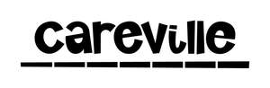

Trade Mark Journal No.2025/009 28 February 2025
UK00004163105 20 February 2025 (9,16,25,28,35,38,41,44)
Mark 1
Mark 2

- Class 9
- Video films; Video disks with recorded animated cartoons; Interactive video software; 3D animation software; Interactive video apparatus; Prerecorded video cassettes featuring animated fictional stories; Downloadable video recordings; Downloadable video recordings featuring music; Interactive entertainment computer software for video games; Interactive multimedia computer games programmes; Education software.
- Class 16
- Magazines featuring video and computer games; Printed leaflets; Printed teaching material; Printed informational flyers; Printed teaching materials; Printed informational sheets; Printed training materials; Printed correspondence course materials; Publications (Printed -); Printed manuals; Printed newsletters; Printed informational folders; Printed stationery; Printed guides; Printed visuals.
- Class 25
- Clothing; Parts of clothing, footwear and headgear; Embroidered clothing; Clothing for children; Printed t-shirts.
- Class 28
- Electronic educational teaching games.
- Class 35
- Producing promotional videotapes, video discs, and audio visual recordings; Distribution and dissemination of advertising materials [leaflets, prospectuses, printed material, samples]; Publication of publicity materials and texts; Retail services connected with the sale of clothing and clothing accessories; Advertising and marketing services provided by means of social media; Advertising services to promote public awareness of social issues; Distribution of printed promotional material by post; Distribution of flyers, brochures, printed matter and samples for advertising purposes; Publication of printed matter for advertising purposes in electronic form; Electronic publication of printed matter for advertising purposes; Business administration services in the field of healthcare.
- Class 38
- Transmission of video films.
- Class 41
- Audio, video and multimedia production, and photography; Production of animation; Production of educational sound and video recordings; Production of animated cartoons; Production of videos; Special effects animation services for film and video; Video game entertainment services; Entertainment services for children; Production of pre-recorded video films; Kindergarten services [education or entertainment]; Providing educational entertainment services for children in after-school centers; Educational services provided for teachers of children; Production of educational television programmes; Educational services provided for children; Education, teaching and training; Training of teachers; Conducting workshops [training]; Health education; Educational services in the healthcare sector; Medical education services; Education services relating to health; Educational and training services relating to healthcare; Services of schools [education]; Education and training services in the field of occupational health and safety; Primary education services.
- Class 44
- Medical and healthcare services; Healthcare services; Providing medical information in the healthcare sector; Health-care services; Healthcare information services; Healthcare advisory services.
NHS Staffordshire and Stoke-on-Trent Integrated Care Board